Cuidar la vida que nos rodea
La vida de
nuestro bosque
nos necesita.
Somos jóvenes de Madre de Dios unidos para alzar la voz por nuestra biodiversidad y proteger el hogar que compartimos.
Madre de Dios · Amazonía peruana15 Vida de ecosistemas terrestres
Nuestra razón de ser
Dedicado a quienes decidieron cuidar nuestra casa común.
La creación de esta plataforma es el resultado de una visión compartida: una iniciativa impulsada por jóvenes con el firme propósito de construir una sociedad más sana para todos los madrediosenses y contribuir activamente a la preservación de nuestra casa común.
Este esfuerzo está dedicado a todos los jóvenes de la región de Madre de Dios que no se rindieron ante las adversidades de su entorno y que decidieron no quedarse de brazos cruzados frente a la ignorancia y la indiferencia ante la pérdida de biodiversidad.
Nuestro propósito
Concientizar hoy para proteger la vida de mañana.
Queremos sensibilizar a las personas sobre la pérdida de biodiversidad en Madre de Dios y promover el cuidado y la conservación de nuestros ecosistemas. Creemos que una sociedad más informada puede sumarse a la protección de nuestra casa común.
El desafío en nuestra región
La biodiversidad de Madre de Dios está en riesgo.
En Madre de Dios, la pérdida de biodiversidad es un problema que afecta a los ecosistemas, la flora y la fauna de nuestra región. Sus principales causas son la deforestación, la contaminación, la minería ilegal y la explotación excesiva de los recursos naturales.
Lo que está en juego
Cuando se pierde un hábitat, todo se desequilibra.
Estas actividades destruyen hábitats de nuestra localidad, reducen las poblaciones de especies y desequilibran los ecosistemas. Entre sus consecuencias están la aparición de enfermedades, la migración forzada de animales y la contaminación de los ríos.
Ecosistemas en desequilibrio y animales desplazados
Ríos contaminados y riesgos para la salud
Imágenes de nuestra región
Un territorio de vida que merece ser protegido.
La Amazonía nos da vida. Estas imágenes muestran sus bosques y algunos de los impactos que amenazan sus ecosistemas.
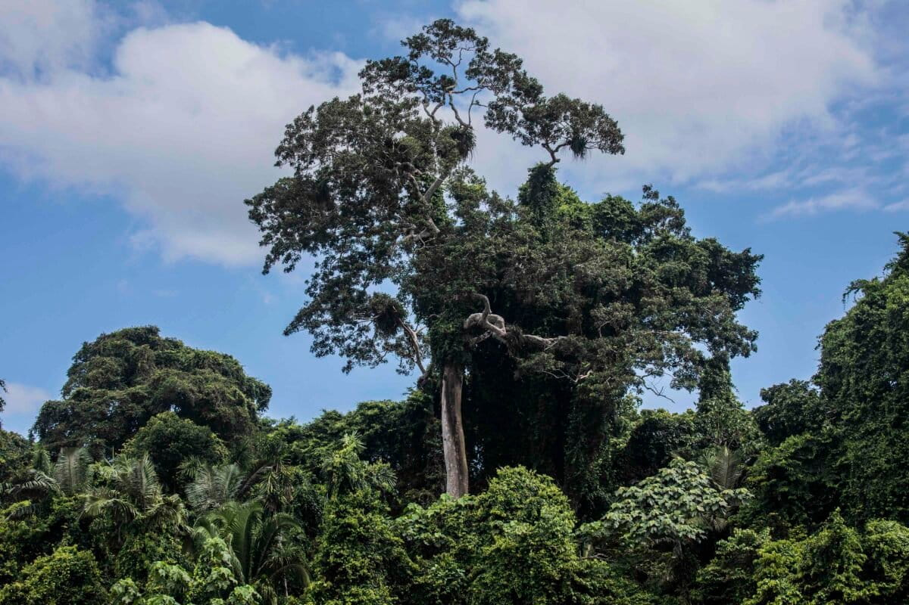
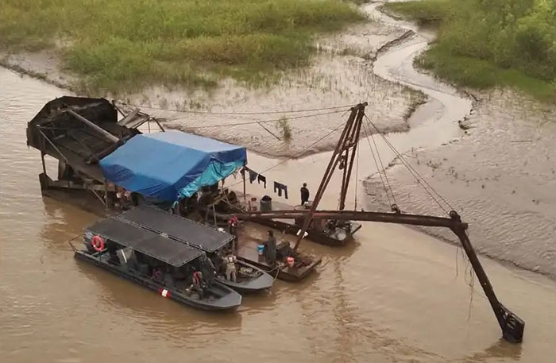
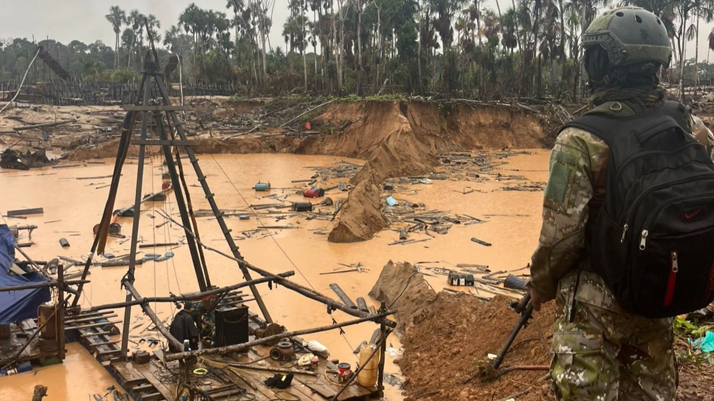
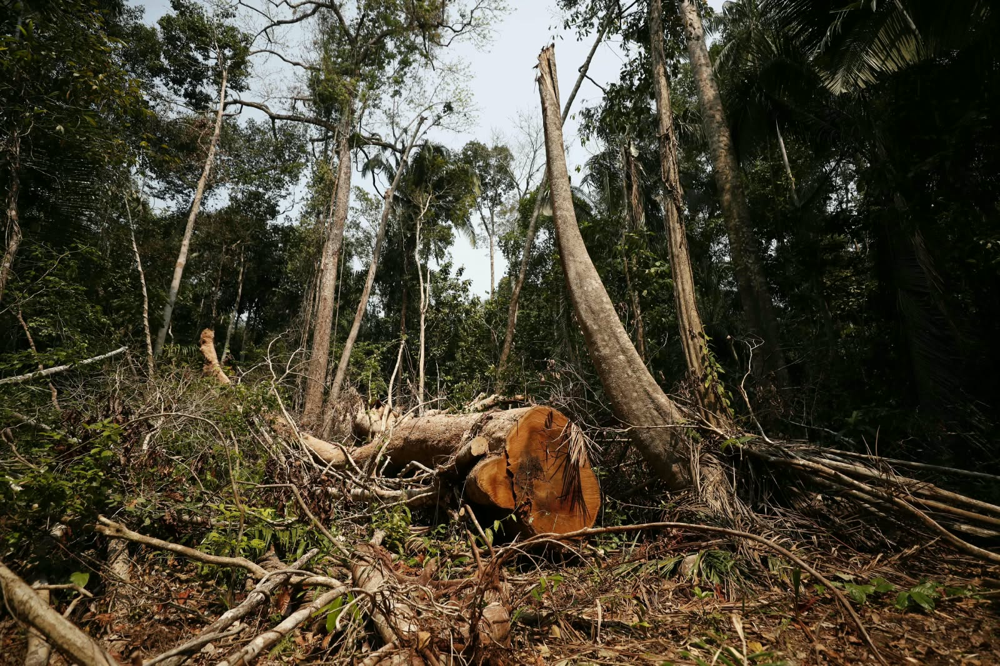
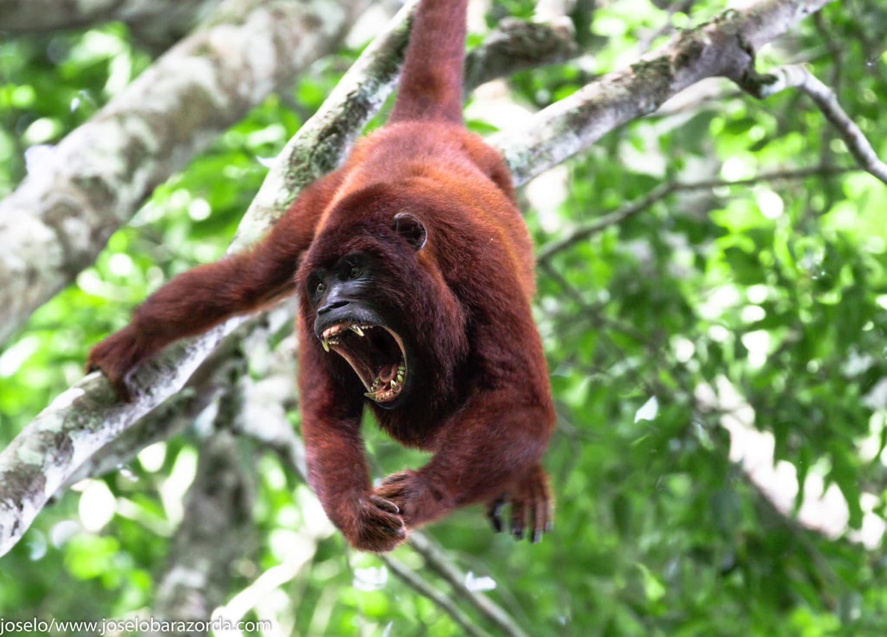
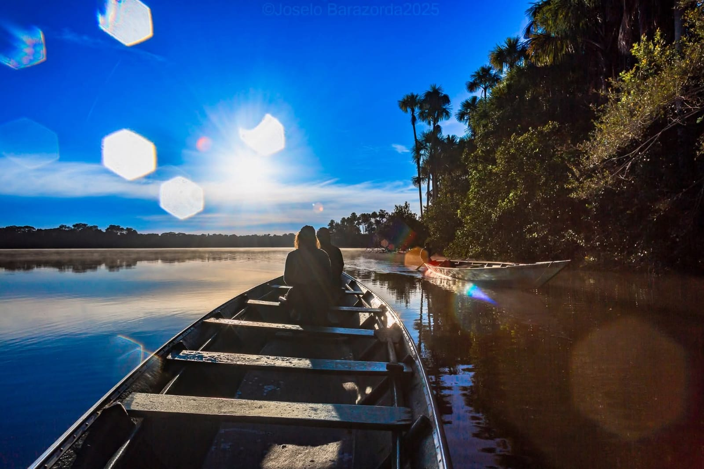
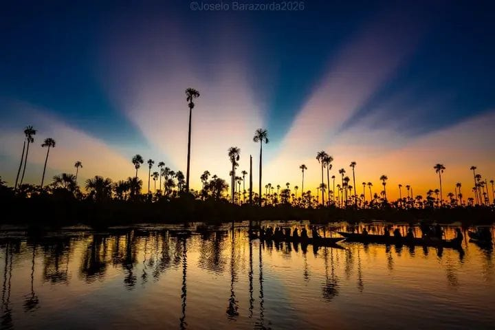
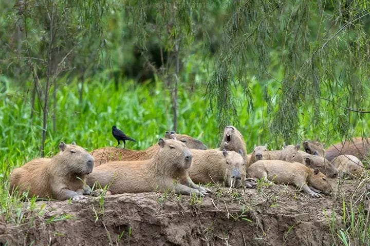
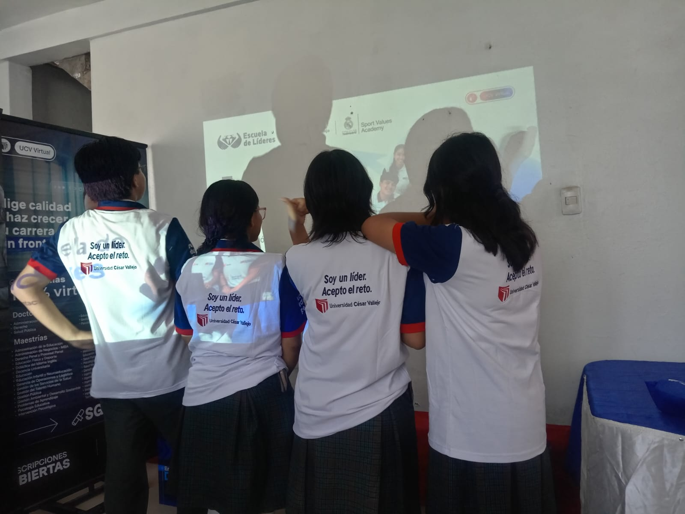
Conócenos
Jóvenes unidos por nuestra tierra.
Somos el equipo detrás de esta iniciativa de concientización sobre la biodiversidad en Madre de Dios. El proyecto es desarrollado por un equipo estudiantil de cuatro integrantes.
Institución educativaI.E. Básica Regular Nuestra Señora de las Mercedes
Aprender para cuidar
Conoce nuestra biodiversidad.
Estas especies forman parte de los bosques y ríos amazónicos de Madre de Dios. Para el mono choro, SERFOR reconoce la subespecie Lagothrix lagotricha tschudii en la región; nombres científicos basados en las fuentes citadas. Las fotografías son ilustrativas y algunas fueron tomadas fuera de Madre de Dios.
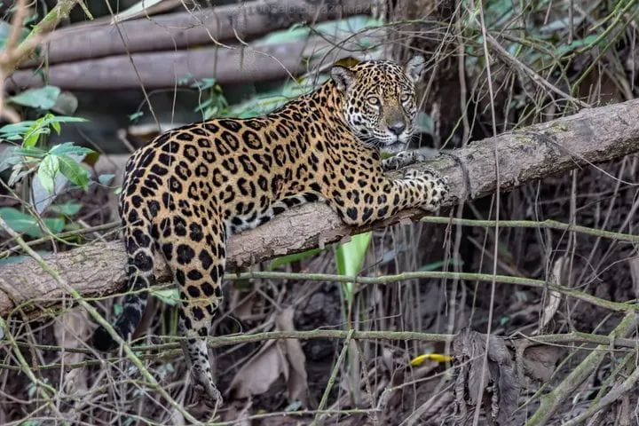
Jaguar
Panthera oncaHábitat: bosques amazónicos, riberas y humedales.
Importancia: gran depredador que ayuda a mantener el equilibrio de las comunidades de fauna.
Amenazas: pérdida y fragmentación del hábitat, caza y conflictos con actividades humanas.
Ayuda: no compres partes de fauna silvestre y apoya la conservación de los bosques.
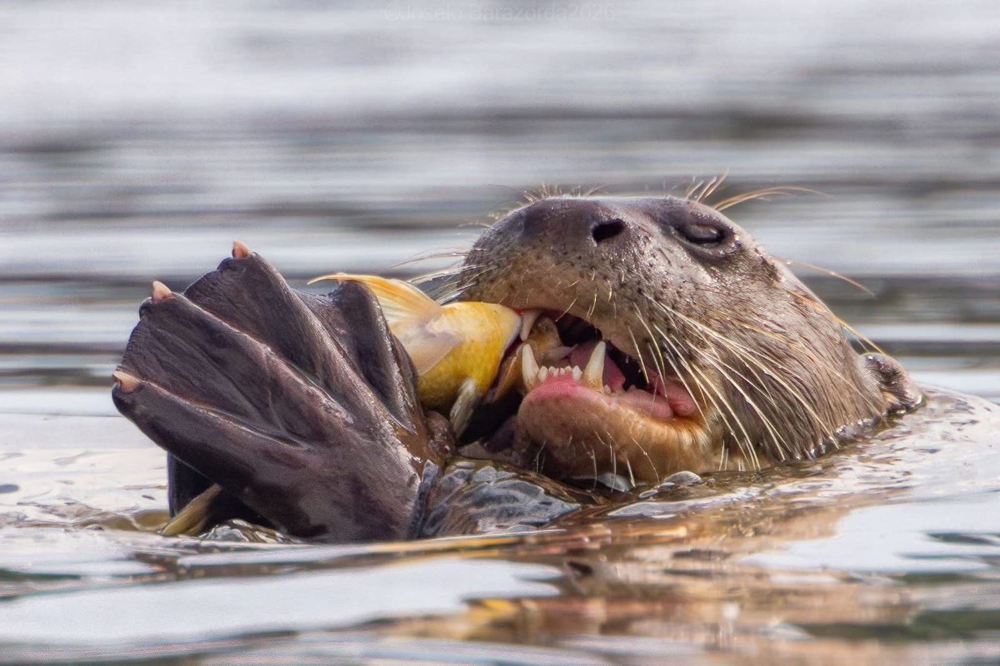
Lobo de río
Pteronura brasiliensisHábitat: ríos, lagos y cochas amazónicas; SERNANP lo registra en Tambopata.
Importancia: depredador acuático que forma parte de las cadenas alimentarias de ríos y lagunas.
Amenazas: contaminación por actividades mineras, alteración de riberas y perturbación humana.
Ayuda: mantén distancia al observarlo y evita contaminar ríos y cochas.

Guacamayos
Ara spp. · grupo de especiesHábitat: bosques amazónicos y zonas con árboles grandes para alimentarse y anidar.
Importancia: contribuyen a la dinámica del bosque mediante el consumo y movimiento de semillas.
Amenazas: pérdida de árboles de anidación y captura o comercio ilegal de aves.
Ayuda: nunca compres aves silvestres; obsérvalas libres y a distancia.
Foto: Fernando Afonso Visentin Favaro · CC BY-SA 4.0
Mono choro
Lagothrix lagotricha tschudiiHábitat: bosques tropicales amazónicos; SERFOR incluye Madre de Dios en la distribución de esta subespecie.
Importancia: primate arborícola que participa en la dispersión de semillas.
Amenazas: pérdida de bosque, cacería y captura para el comercio de fauna.
Ayuda: no lo tengas como mascota; reporta el tráfico a las autoridades competentes.
Foto: Evgenia Kononova · dominio público
Castaña amazónica
Bertholletia excelsaHábitat: bosques amazónicos; SERFOR documenta su fenología y aprovechamiento en Madre de Dios.
Importancia: sus frutos alimentan fauna y su recolección puede generar ingresos forestales sin tumbar el árbol.
Amenazas: deforestación, fragmentación y tala de árboles reproductivos.
Ayuda: elige castaña de origen legal y responsable, y conserva árboles y bosque.
Foto: My Favorite Pet Sitter · CC BY 2.0
Shihuahuaco
Dipteryx micranthaHábitat: bosques amazónicos; SERFOR documenta la especie en estudios forestales de Madre de Dios.
Importancia: árbol emergente que ofrece estructura y recursos a distintas especies del bosque.
Amenazas: extracción maderera intensiva y degradación o fragmentación del hábitat.
Ayuda: pregunta por el origen legal y trazable de la madera antes de comprarla.
Foto: Luciepotier · CC BY-SA 4.0Acciones para todos
¡Yo también soy guardián!
Pequeñas decisiones diarias y actividades organizadas ayudan a cuidar los ecosistemas de Madre de Dios.
Protege ríos y quebradas
No arrojes basura, aceite ni sustancias contaminantes al agua. Reduce plásticos desechables y participa solo en jornadas de limpieza organizadas con medidas de seguridad.
Cuida los bosques
Protege los árboles y evita apoyar la tala ilegal. Reforesta con especies nativas y orientación técnica; respeta los hábitats y no extraigas plantas silvestres.
Maneja tus residuos
Separa residuos según las indicaciones de tu localidad, reutiliza materiales y consulta dónde reciben reciclables. No quemes ni abandones basura.
Protege la fauna
No compres ni captures animales silvestres como mascotas, no dañes sus hábitats, obsérvalos desde lejos y rechaza productos hechos con partes de fauna.
Consume responsablemente
Prefiere productos regionales de origen legal y responsable, como artesanías y productos amazónicos sostenibles. Pregunta cómo se obtuvieron sus materiales.
Una acción por día
7 días para convertirte en guardián.
Completa los retos a tu ritmo. Tu progreso se guarda solo en este navegador y no solicitamos datos personales.
Tu progreso0 de 7 retos completados
Iniciativas en la región
Red de guardianes de Madre de Dios.
Organizaciones e iniciativas con información pública sobre conservación, restauración, investigación o rescate de fauna.
Camino Verde Tambopata
Trabaja en regeneración forestal, viveros de especies nativas y sistemas agroforestales. Tiene centros en la región, incluidos Baltimori y La Joya.
Ubicación general: Tambopata y Puerto Maldonado, Madre de Dios.
Su web confirma consultas para visitas, voluntariado y prácticas; coordina disponibilidad y condiciones antes de ir.
Centros y programas ↗Contacto oficial ↗Conservación Amazónica – ACCA
Gestiona la Concesión para Conservación Los Amigos y la Estación Biológica Los Amigos, dedicadas a conservación e investigación.
Ubicación general: confluencia de los ríos Madre de Dios y Los Amigos.
La estación ofrece información para experiencias educativas; escribe primero para consultar acceso y condiciones.
Los Amigos · ACCA ↗Consultar a la estación ↗ARBIO Perú
Conserva y estudia bosques amazónicos y árboles grandes en la cuenca del río Las Piedras.
Ubicación general: distrito de Las Piedras, provincia de Tambopata.
Su web publica experiencias y visitas; confirma fechas, traslado y requisitos directamente con la organización.
Sitio oficial ↗Información de visitas ↗Amazon Shelter
Centro de rehabilitación y liberación de fauna silvestre en Tambopata; informa sobre rescate y rehabilitación de animales afectados por tráfico y pérdida de hábitat.
Ubicación general: Tambopata, Madre de Dios.
Su web ofrece información de voluntariado. Contacta directamente y no visites sin autorización previa.
Sitio oficial ↗Voluntariado ↗La información puede cambiar. Confirma datos, disponibilidad, permisos y condiciones de acceso con cada organización antes de visitar o colaborar.
Economías locales y productos regionales
Emprendimientos amazónicos.
Compartimos organizaciones con información pública sobre productos regionales. La página de cada iniciativa describe sus propios procesos; verifica origen, permisos y disponibilidad antes de comprar.
Agrobosque
Cooperativa agraria de Madre de Dios que presenta productos derivados del cacao nativo y datos de contacto públicos.
Ubicación publicada: carretera Interoceánica, km 129, Tambopata–Inambari, Puerto Maldonado.
Productos e información oficial ↗Cooperativa Tambopata Candamo
Cooperativa de Madre de Dios que informa sobre producción y comercialización de cacao y actividades agroforestales.
Ubicación publicada: Urbanización Los Castaños, Puerto Maldonado.
Conoce la cooperativa ↗No damos por verificada una certificación ambiental de estos productos. Pregunta por permisos y trazabilidad; no compres productos hechos con partes de animales silvestres o flora extraída ilegalmente.
Transparencia y aprendizaje
Nuestro impacto.
Aún no registramos resultados verificados de actividades del proyecto. Por ahora, presentamos un plan pendiente de ejecución; añadiremos cifras y fotografías autorizadas cuando existan registros confirmados.
Educación ambiental
Organizar una actividad educativa sobre biodiversidad local y documentar fecha, contenido, número de participantes y aprendizajes.
Acción comunitaria segura
Coordinar una jornada de limpieza o restauración con orientación técnica, permisos y medidas de seguridad; registrar resultados sin estimaciones.
Seguimiento y evidencias
Guardar fotografías autorizadas, lista de actividades realizadas, participantes contabilizados y aprendizajes para actualizar esta sección con transparencia.
Respuestas rápidas
Preguntas frecuentes.
¿Qué hago si encuentro un animal silvestre herido?
No lo manipules ni intentes alimentarlo. Mantén distancia y comunícate con la autoridad regional competente o SERFOR para recibir instrucciones.
¿Puedo tener un mono o un ave silvestre como mascota?
No. La fauna silvestre debe permanecer en su hábitat. No compres ni captures animales; informa a la autoridad sobre posible tráfico.
¿Dónde puedo reciclar en mi localidad?
Los puntos de recepción varían por distrito y pueden cambiar. Consulta a tu municipalidad o a la organización local de reciclaje antes de trasladar materiales.
¿Cómo participo en una jornada de limpieza o reforestación?
Busca actividades convocadas por una organización o autoridad reconocida. Confirma lugar, permisos, equipo de seguridad y especies apropiadas antes de participar.
Ayúdanos a ampliar la red
¿Conoces otra iniciativa local?
Prepara una ficha para que el equipo la revise. La sugerencia no se publica ni se envía automáticamente y no solicita datos personales.
Información consultada
Fuentes y referencias.
Consulta estas fuentes oficiales y especializadas para ampliar la información. Las imágenes de especies enlazan a sus respectivas páginas de Wikimedia Commons, donde figuran autores y licencias.
- SERNANP — Plan Maestro de la Reserva Nacional Tambopata 2025–2030: planificación para la conservación del área.
- SERNANP — Reserva Nacional Tambopata: fauna, ubicación y visita al área natural protegida.
- SERNANP — Información de la Reserva Nacional Tambopata: registros de jaguar y lobo de río.
- UICN — Evaluación de Pteronura brasiliensis: amenazas para el lobo de río.
- SERFOR — Guía de identificación de aves: ficha de guacamayos.
- SERFOR — Guía de identificación de especies (2024): distribución del mono choro en Madre de Dios.
- ACCA — Estación Biológica Los Amigos: hábitats y especies observadas en la estación.
- SERFOR — Caracterización de sistemas agroforestales en Madre de Dios (2025): castaña y contexto regional.
- Estudio sobre polinización y dispersión de semillas de castaña: interacciones ecológicas de Bertholletia excelsa.
- SERFOR — Avances en la investigación del shihuahuaco: especies Dipteryx y estudios en Madre de Dios.
- Conservación Amazónica — Los Amigos: concesión, estación e investigación.
- Camino Verde — Centros: viveros y restauración en Madre de Dios.
- ARBIO Perú — Visita ARBIO: información del bosque y experiencias publicadas.
- Amazon Shelter: centro de rehabilitación y liberación de fauna silvestre.
- Agrobosque y Cooperativa Tambopata Candamo: información de productos regionales publicada por las organizaciones.